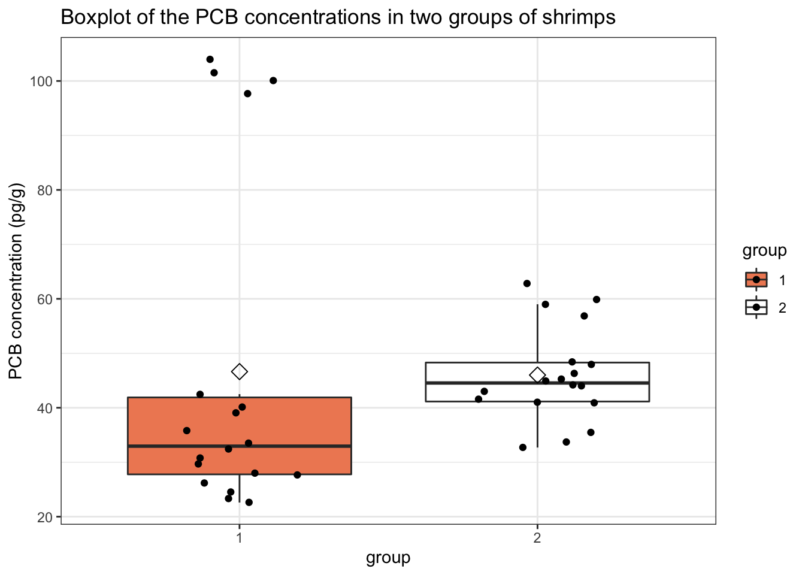

Aims of this exercise
This exercise aims to further sharpen your skills in
- translating the research question in a a null and alternative hypothesis of t-tests
- critically evaluating the assumptions of t-tests, and
- selecting the appropriate test for answering the research question.
The shrimps dataset
Dataset on the accumulation of PCBs (Polychlorinated biphenyls) in the adipose tissue of shrimps. PCBs are often present in coolants, and are know to accumulate easily in the adipose tissue of shrimps. In this experiment, two groups of 18 samples (each 100 grams) of shrimps each were cultivated in different conditions, one control condition and one condition where the medium was poluted with PCBs. Note that the PCB concentrations were measured in pg/g adipose tissue.
Research question
Is there an effect of the growth condition on the PCB concentration in the adipose tissue of shrimps?
Load libraries:
Import the data
shrimps <- read_tsv(
"https://raw.githubusercontent.com/statOmics/PSLS21/data/shrimps.txt"
)
## Rows: 36 Columns: 2
## ── Column specification ──────────────────────────────────────────────
## Delimiter: "\t"
## dbl (2): PCB.conc, group
##
## ℹ Use `spec()` to retrieve the full column specification for this data.
## ℹ Specify the column types or set `show_col_types = FALSE` to quiet this message.
## Rows: 36
## Columns: 2
## $ PCB.conc <dbl> 29.7, 24.5, 97.7, 39.1, 22.6, 32.4, 27.7, 100.1, 40…
## $ group <dbl> 1, 1, 1, 1, 1, 1, 1, 1, 1, 1, 1, 1, 1, 1, 1, 1, 1, …
Data tidying
shrimps <- shrimps %>%
mutate(group = as.factor(group))
Data exploration
The first step is to explore the data.
Visualize the data:
shrimps %>%
ggplot(aes(x = group, y = PCB.conc, fill = group)) +
scale_fill_manual(values = c("darkorchid", "olivedrab")) +
theme_bw() +
geom_boxplot(outlier.shape = NA) +
geom_jitter(width = 0.2) +
ggtitle("Boxplot of the PCB concentrations in two groups of shrimps") +
ylab("PCB concentration (pg/g)") +
stat_summary(
fun = mean, geom = "point",
shape = 5, size = 3, color = "black",
)

We can see that for group 1 we have four very clear outliers in the data. These values were double-checked (i.e for typing errors), but there was no reason found to believe that these values are incorrect.
Analysis
A good way for testing the research hypothesis is to perform an unpaired two-sample t-test to find out whether there is a significant difference in the mean PCB concentrations between both groups of samples. Before we can do this, we must check if all the required assumptions are met.
Assumptions
- The observations are independent of each other (in both groups)
- The data (PCB.conc) must be normally distributed (in both groups)
- The variance is equal in the two groups.
The first assumption is met, as we randomly selected shrimps and submitted them to one of two growth conditions. No underlying correlation patterns are expected.
We can check the second assumption with a QQ-plot.
shrimps %>%
ggplot(aes(sample = PCB.conc)) +
geom_qq() +
geom_qq_line() +
facet_grid(~ group)

We clearly see that we have strong deviations from normality. Many datapoints do not lie near the quantile-quantile line. As such, we may conclude that our data are not normally distributed. In addition, the boxplots suggest that the variability differs between the two groups.
Given the location of the outliers transformation will not help here. Therefore, the t-test is not appropriate here. We will revisit this dataset in exercise 9.1 and consider an alternative analysis using a non-parametric test.
LS0tCnRpdGxlOiAiRXhlcmNpc2UgNS40OiBIeXBvdGhlc2lzIHRlc3Rpbmcgb24gdGhlIHNocmltcHMgZGF0YXNldCAtIHNvbHV0aW9uIgphdXRob3I6ICJMaWV2ZW4gQ2xlbWVudCwgSmVyb2VuIEdpbGlzIGFuZCBNaWxhbiBNYWxmYWl0IgpkYXRlOiAic3RhdE9taWNzLCBHaGVudCBVbml2ZXJzaXR5IChodHRwczovL3N0YXRvbWljcy5naXRodWIuaW8pIgotLS0KIyBBaW1zIG9mIHRoaXMgZXhlcmNpc2UKClRoaXMgZXhlcmNpc2UgYWltcyB0byBmdXJ0aGVyIHNoYXJwZW4geW91ciBza2lsbHMgaW4KCi0gdHJhbnNsYXRpbmcgdGhlIHJlc2VhcmNoIHF1ZXN0aW9uIGluIGEgYSBudWxsIGFuZCBhbHRlcm5hdGl2ZSBoeXBvdGhlc2lzIG9mIHQtdGVzdHMKLSBjcml0aWNhbGx5IGV2YWx1YXRpbmcgdGhlIGFzc3VtcHRpb25zIG9mIHQtdGVzdHMsIGFuZAotIHNlbGVjdGluZyB0aGUgYXBwcm9wcmlhdGUgdGVzdCBmb3IgYW5zd2VyaW5nIHRoZSByZXNlYXJjaCBxdWVzdGlvbi4KCiMgVGhlIHNocmltcHMgZGF0YXNldAoKRGF0YXNldCBvbiB0aGUgYWNjdW11bGF0aW9uIG9mIFBDQnMgKFBvbHljaGxvcmluYXRlZCBiaXBoZW55bHMpCmluIHRoZSBhZGlwb3NlIHRpc3N1ZSBvZiBzaHJpbXBzLiBQQ0JzIGFyZSBvZnRlbiBwcmVzZW50IGluIGNvb2xhbnRzLCBhbmQgYXJlCmtub3cgdG8gYWNjdW11bGF0ZSBlYXNpbHkgaW4gdGhlIGFkaXBvc2UgdGlzc3VlIG9mIHNocmltcHMuIEluIHRoaXMgZXhwZXJpbWVudCwKdHdvIGdyb3VwcyBvZiAxOCBzYW1wbGVzIChlYWNoIDEwMCBncmFtcykgb2Ygc2hyaW1wcyBlYWNoIHdlcmUgY3VsdGl2YXRlZAppbiBkaWZmZXJlbnQgY29uZGl0aW9ucywgb25lIGNvbnRyb2wgY29uZGl0aW9uIGFuZCBvbmUgY29uZGl0aW9uCndoZXJlIHRoZSBtZWRpdW0gd2FzIHBvbHV0ZWQgd2l0aCBQQ0JzLiBOb3RlIHRoYXQgdGhlIFBDQiBjb25jZW50cmF0aW9ucyB3ZXJlCm1lYXN1cmVkIGluIHBnL2cgYWRpcG9zZSB0aXNzdWUuCgojIFJlc2VhcmNoIHF1ZXN0aW9uCgpJcyB0aGVyZSBhbiBlZmZlY3Qgb2YgdGhlCmdyb3d0aCBjb25kaXRpb24gb24gdGhlIFBDQiBjb25jZW50cmF0aW9uIGluIHRoZSBhZGlwb3NlCnRpc3N1ZSBvZiBzaHJpbXBzPwoKTG9hZCBsaWJyYXJpZXM6CgpgYGB7ciBsaWJyYXJpZXMsIG1lc3NhZ2U9RkFMU0UsIHdhcm5pbmc9RkFMU0V9CmxpYnJhcnkodGlkeXZlcnNlKQpgYGAKCiMgSW1wb3J0IHRoZSBkYXRhCgpgYGB7cn0Kc2hyaW1wcyA8LSByZWFkX3RzdigKICAiaHR0cHM6Ly9yYXcuZ2l0aHVidXNlcmNvbnRlbnQuY29tL3N0YXRPbWljcy9QU0xTMjEvZGF0YS9zaHJpbXBzLnR4dCIKKQpnbGltcHNlKHNocmltcHMpCmBgYAoKIyBEYXRhIHRpZHlpbmcKCmBgYHtyfQpzaHJpbXBzIDwtIHNocmltcHMgJT4lCiAgbXV0YXRlKGdyb3VwID0gYXMuZmFjdG9yKGdyb3VwKSkKYGBgCgojIERhdGEgZXhwbG9yYXRpb24KClRoZSBmaXJzdCBzdGVwIGlzIHRvIGV4cGxvcmUgdGhlIGRhdGEuCgpgYGB7cn0Kc2hyaW1wcyAlPiUKICBjb3VudChncm91cCkKYGBgCgpWaXN1YWxpemUgdGhlIGRhdGE6CgpgYGB7cn0Kc2hyaW1wcyAlPiUKICBnZ3Bsb3QoYWVzKHggPSBncm91cCwgeSA9IFBDQi5jb25jLCBmaWxsID0gZ3JvdXApKSArCiAgc2NhbGVfZmlsbF9tYW51YWwodmFsdWVzID0gYygiZGFya29yY2hpZCIsICJvbGl2ZWRyYWIiKSkgKwogIHRoZW1lX2J3KCkgKwogIGdlb21fYm94cGxvdChvdXRsaWVyLnNoYXBlID0gTkEpICsKICBnZW9tX2ppdHRlcih3aWR0aCA9IDAuMikgKwogIGdndGl0bGUoIkJveHBsb3Qgb2YgdGhlIFBDQiBjb25jZW50cmF0aW9ucyBpbiB0d28gZ3JvdXBzIG9mIHNocmltcHMiKSArCiAgeWxhYigiUENCIGNvbmNlbnRyYXRpb24gKHBnL2cpIikgKwogIHN0YXRfc3VtbWFyeSgKICAgIGZ1biA9IG1lYW4sIGdlb20gPSAicG9pbnQiLAogICAgc2hhcGUgPSA1LCBzaXplID0gMywgY29sb3IgPSAiYmxhY2siLAogICkKYGBgCgpXZSBjYW4gc2VlIHRoYXQgZm9yIGdyb3VwIDEgd2UgaGF2ZSBmb3VyIHZlcnkgY2xlYXIgb3V0bGllcnMKaW4gdGhlIGRhdGEuIFRoZXNlIHZhbHVlcyB3ZXJlIGRvdWJsZS1jaGVja2VkIChpLmUgZm9yCnR5cGluZyBlcnJvcnMpLCBidXQgdGhlcmUgd2FzIG5vIHJlYXNvbiBmb3VuZCB0byBiZWxpZXZlCnRoYXQgdGhlc2UgdmFsdWVzIGFyZSBpbmNvcnJlY3QuCgojIEFuYWx5c2lzCgpBIGdvb2Qgd2F5IGZvcgp0ZXN0aW5nIHRoZSByZXNlYXJjaCBoeXBvdGhlc2lzIGlzIHRvIHBlcmZvcm0gYW4gdW5wYWlyZWQKdHdvLXNhbXBsZSB0LXRlc3QgdG8gZmluZCBvdXQgd2hldGhlciB0aGVyZSBpcyBhIHNpZ25pZmljYW50CmRpZmZlcmVuY2UgaW4gdGhlIG1lYW4gUENCIGNvbmNlbnRyYXRpb25zIGJldHdlZW4gYm90aCBncm91cHMKb2Ygc2FtcGxlcy4gQmVmb3JlIHdlIGNhbiBkbyB0aGlzLCB3ZSBtdXN0IGNoZWNrIGlmIGFsbCB0aGUKcmVxdWlyZWQgYXNzdW1wdGlvbnMgYXJlIG1ldC4KCiMjIEFzc3VtcHRpb25zCgoxLiBUaGUgb2JzZXJ2YXRpb25zIGFyZSBpbmRlcGVuZGVudCBvZiBlYWNoIG90aGVyIChpbiBib3RoIGdyb3VwcykKMi4gVGhlIGRhdGEgKFBDQi5jb25jKSBtdXN0IGJlIG5vcm1hbGx5IGRpc3RyaWJ1dGVkIChpbiBib3RoIGdyb3VwcykKMy4gVGhlIHZhcmlhbmNlIGlzIGVxdWFsIGluIHRoZSB0d28gZ3JvdXBzLgoKVGhlIGZpcnN0IGFzc3VtcHRpb24gaXMgbWV0LCBhcyB3ZSByYW5kb21seSBzZWxlY3RlZCBzaHJpbXBzIGFuZApzdWJtaXR0ZWQgdGhlbSB0byBvbmUgb2YgdHdvIGdyb3d0aCBjb25kaXRpb25zLiBObyB1bmRlcmx5aW5nCmNvcnJlbGF0aW9uIHBhdHRlcm5zIGFyZSBleHBlY3RlZC4KCldlIGNhbiBjaGVjayB0aGUgc2Vjb25kIGFzc3VtcHRpb24gd2l0aCBhIFFRLXBsb3QuCgpgYGB7cn0Kc2hyaW1wcyAlPiUKICBnZ3Bsb3QoYWVzKHNhbXBsZSA9IFBDQi5jb25jKSkgKwogIGdlb21fcXEoKSArCiAgZ2VvbV9xcV9saW5lKCkgKwogIGZhY2V0X2dyaWQofiBncm91cCkKYGBgCgpXZSBjbGVhcmx5IHNlZSB0aGF0IHdlIGhhdmUgc3Ryb25nIGRldmlhdGlvbnMgZnJvbQpub3JtYWxpdHkuIE1hbnkgZGF0YXBvaW50cyBkbyBub3QgbGllIG5lYXIgdGhlIHF1YW50aWxlLXF1YW50aWxlCmxpbmUuIEFzIHN1Y2gsIHdlIG1heSBjb25jbHVkZSB0aGF0IG91ciBkYXRhIGFyZSBub3Qgbm9ybWFsbHkgZGlzdHJpYnV0ZWQuCkluIGFkZGl0aW9uLCB0aGUgYm94cGxvdHMgc3VnZ2VzdCB0aGF0IHRoZQp2YXJpYWJpbGl0eSBkaWZmZXJzIGJldHdlZW4gdGhlIHR3byBncm91cHMuCgpHaXZlbiB0aGUgbG9jYXRpb24gb2YgdGhlIG91dGxpZXJzIHRyYW5zZm9ybWF0aW9uIHdpbGwgbm90IGhlbHAgaGVyZS4gVGhlcmVmb3JlLAp0aGUgdC10ZXN0IGlzIG5vdCBhcHByb3ByaWF0ZSBoZXJlLiBXZSB3aWxsIHJldmlzaXQgdGhpcyBkYXRhc2V0IGluIFtleGVyY2lzZQo5LjFdKC4vMDlfMV9zaHJpbXBzLmh0bWwpIGFuZCBjb25zaWRlciBhbiBhbHRlcm5hdGl2ZSBhbmFseXNpcyB1c2luZyBhCioqbm9uLXBhcmFtZXRyaWMqKiB0ZXN0Lgo=